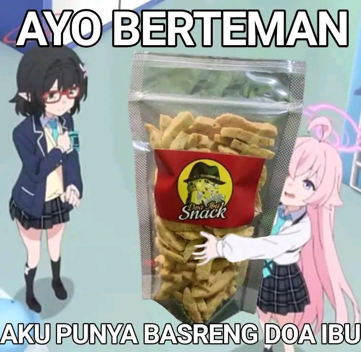

Projek Kreatif dan Kewirausahaan atau yang disingkat menjadi PKK adalah mata pelajaran atau kegiatan yang mengajarkan siswa membuat produk atau layanan jasa secara kreatif dan bernilai ekonomis,
menggunakan pendekatan pembelajaran berbasis proyek untuk mengaktualisasikan kompetensi siswa, serta mengembangkan pemahaman dan keterampilan dalam merencanakan, memproduksi, memasarkan, dan mengelola usaha.
Kegiatan ini bertujuan untuk menanamkan pendidikan kewirausahaan, meningkatkan daya saing, dan menghasilkan produk atau layanan yang inovatif dan bernilai jual.
Aku Esemka dan aku bangga
Berani
kegiatan yang menghasilkan keuntungan
kegiatan yang menyangkut keberanian seseorang untuk melakukan suatu kegiatan usaha baik merancang, meluncurkan, dan menjalankan bisnis baru.
Seorang pelaku usaha (enterpreneur) yang memiliki usaha sendiri dalam bidang barang atau jasa.
Contohnya makanan, minuman, roti, jajanan/snack, dll.
Usaha kuliner snack
Seperti sembako, pakaian, alat eloktronik, otomotif, dll.
Menjual peralatan dapur
Contohnya ojek, service komputer, penyewaan, pembuaatan web, dll.
Jasa potong rambut
Socialpreneur atau wirausaha sosial merupakan pengusaha yang mempunyai misi untuk menyelesaikan masalah sosial dengan pemberdayaan komunitas melalui aktivitas yang bernilai ekonomi.
Intrapreneur merupakan seorang pengusaha yang bekerja secara kreatif, inovatif serta berkontribusi maksimal bagi kemajuan perusahaan. Umumnya, mereka bisa berasal dari berbagai jabatan, mulai dari karyawan biasa hingga eksekutif.
Technopreneurship adalah kolaborasi dari teknologi dan wirausaha. Technopreneurship dapat diartikan sebagai wirausaha yang proses pelaksanaannya dilakukan dengan mengintegrasikan kegiatan jual beli melalui komputer dan internet.
Pelajaran Projek Kreatif Kewirausahaan adalah langkah nyata untuk menyiapkan generasi muda menghadapi dunia kerja yang dinamis. Dengan belajar berwirausaha sejak dini, siswa tidak hanya memiliki kemampuan untuk menciptakan peluang, tetapi juga menjadi individu yang kreatif, mandiri, dan bagi lingkungan sekitar.